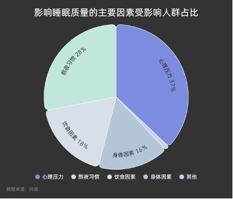

健康现状数据
“睡个好觉”⼀直是国⼈的美好祝福与愿望，但据《国⺠睡眠健康报告》（以下简称“报告”）显示，国 ⺠睡眠时⻓在过去⼗年⾥缩短了1.44⼩时。在我们收集的问卷中显示37%的⼈认为⼼理压⼒是影响睡眠 质量的主要因素。 我们根据艾媒数据中⼼提供的数据绘制出中国国⺠失眠⼈群画像，可以看出，中国国⺠失眠群体主 要为经济发达城市的中⻘年，且相对收⼊与学历较⾼，这类⼈群通常是家庭与⼯作的⻣⼲⼒量，因⽽⾯ 临着来⾃学业、⼯作、家庭等多⽅⾯压⼒，紧绷的精神状态不利于⼊睡。
“睡个好觉”⼀直是国⼈的美好祝福与愿望，但据《国⺠睡眠健康报告》（以下简称“报告”）显示，国 ⺠睡眠时⻓在过去⼗年⾥缩短了1.44⼩时。在我们收集的问卷中显示37%的⼈认为⼼理压⼒是影响睡眠 质量的主要因素。 我们根据艾媒数据中⼼提供的数据绘制出中国国⺠失眠⼈群画像，可以看出，中国国⺠失眠群体主 要为经济发达城市的中⻘年，且相对收⼊与学历较⾼，这类⼈群通常是家庭与⼯作的⻣⼲⼒量，因⽽⾯ 临着来⾃学业、⼯作、家庭等多⽅⾯压⼒，紧绷的精神状态不利于⼊睡。
